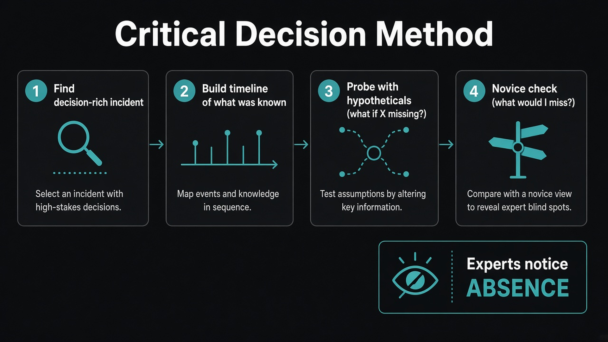

Critical Decision Method gets you judgment, not advice
Source: George / prodmgmt.world (@nurijanian)
original post
What it claims
Expert interviews often fail because experts do not compare options the way we ask them to. They recognize a familiar situation, pick a plausible move, and mentally simulate it. Direct questions get a lossy translation. Gary Klein’s Critical Decision Method (CDM) anchors on a specific incident, builds a timeline of what was known, probes decision points with hypotheticals (“what if that cue was missing?”), and ends with a novice check. Experts notice absence — the fire that should have been roaring and was quiet — and CDM is how you surface those negative cues.
Why it matters for a PO
A PO who only collects “I want better reporting” leaves with a feature request. A PO who walks a specific broken moment gets the decision logic the customer actually used. Same for domain experts and senior engineers before a technical call: you need their frame, not their slogans.
3 takeaways
- Anchor to one decision-rich incident; general questions only return the general frame.
- “Intuition” or “it felt off” is the start of the probe, not the end — keep asking until you have a specific cue.
- Ask what a novice would miss; that contrast is the critical cue list you can reuse.
Practice this week
In your next expert or power-user interview, skip “how do you usually…?” Pick one time things did not go as expected. Timeline it. At each decision point ask one “what if X wasn’t there?” Write three cues you would have missed as a novice, and bring them to refinement.